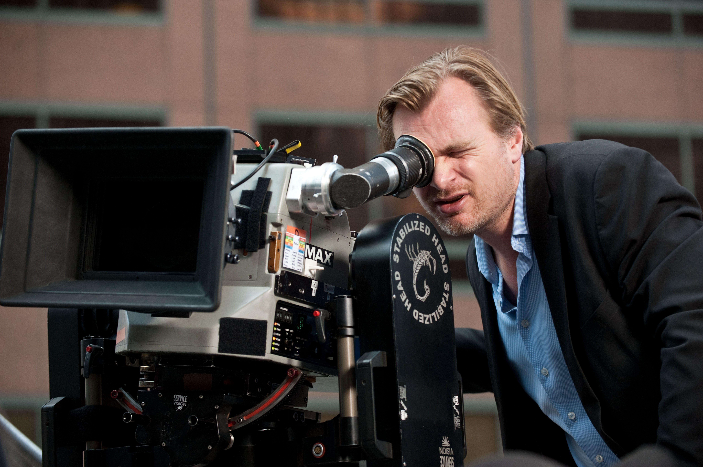

BATMAN BEGINS
After witnessing his parents' death, Bruce learns the art of fighting to confront injustice. When he returns to Gotham as Batman, he must stop a secret society that intends to destroy the city.

THE DARK KNIGHT
When the menace known as the Joker wreaks havoc and chaos on the people of Gotham, Batman, James Gordon and Harvey Dent must work together to put an end to the madness.
DUNKIRK
Allied soldiers from Belgium, the British Commonwealth and Empire, and France are surrounded by the German Army and evacuated during a fierce battle in World War II.
OPPENHEIMER
The story of American scientist J. Robert Oppenheimer and his role in the development of the atomic bomb.
INCEPTION
A thief who steals corporate secrets through the use of dream-sharing technology is given the inverse task of planting an idea into the mind of a C.E.O., but his tragic past may doom the project and his team to disaster.
INTERSTELLAR
When Earth becomes uninhabitable in the future, a farmer and ex-NASA pilot, Joseph Cooper, is tasked to pilot a spacecraft, along with a team of researchers, to find a new planet for humans.
MEMENTO
Leonard Shelby, an insurance investigator, suffers from anterograde amnesia and uses notes and tattoos to hunt for the man he thinks killed his wife, which is the last thing he remembers.
THE DARK NIGHT RISES
Bane, an imposing terrorist, attacks Gotham City and disrupts its eight-year-long period of peace. This forces Bruce Wayne to come out of hiding and don the cape and cowl of Batman again.
About Me, The MAD MAN
I Am Who I Am!
With Passion For Realistic, Good Movies
Best known for his cerebral, often nonlinear, storytelling, acclaimed Academy Award winner writer/director/producer Sir Christopher Nolan CBE was born in London, England. Over the course of more than 25 years of filmmaking, Nolan has gone from low-budget independent films to working on some of the biggest blockbusters ever made and became one of the most celebrated filmmakers of modern cinema.
At 7 years old,Nolan began making short films with his father's Super-8 camera. While studying English Literature at University College London, he shot 16-millimeter films at U.C.L.'s film society, where he learned the guerrilla techniques he would later use to make his first feature, Following (1998), on a budget of around $6,000. The noir thriller was recognized at a number of international film festivals prior to its theatrical release and gained Nolan enough credibility that he was able to gather substantial financing for his next film.
Nolan's second film was Memento (2000), which he directed from his own screenplay based on a short story by his brother Jonathan Nolan. Starring Guy Pearce, the film brought Nolan numerous honors, including Academy Award and Golden Globe Award nominations for Best Original Screenplay. Nolan went on to direct the critically acclaimed psychological thriller, Insomnia (2002), starring Al Pacino, Robin Williams and Hilary Swank.
The turning point in Nolan's career occurred when he was awarded the chance to revive the Batman franchise in 2005. In Batman Begins (2005), Nolan brought a level of gravitas back to the iconic hero, and his gritty, modern interpretation was greeted with praise from fans and critics alike. Before moving on to a Batman sequel, Nolan directed, co-wrote, and produced the mystery thriller The Prestige (2006), starring Christian Bale and Hugh Jackman as magicians whose obsessive rivalry leads to tragedy and murder.
In 2008, Nolan directed, co-wrote, and produced The Dark Knight (2008). Co-written with by his brother Jonathan, the film went on to gross more than a billion dollars at the worldwide box office. Nolan was nominated for a Directors Guild of America (D.G.A.) Award, Writers Guild of America (W.G.A.) Award and Producers Guild of America (P.G.A.) Award, and the film also received eight Academy Award nominations. The film is widely considered one of the best comic book adaptations of all times, with Heath Ledger's performance as the Joker receiving an extremely high acclaim. Ledger posthumously became the first Academy Award winning performance in a Nolan film.
In 2010, Nolan captivated audiences with the Sci-Fi thriller Inception (2010), starring Leonardo DiCaprio in the lead role, which he directed and produced from his own original screenplay that he worked on for almost a decade. The thought-provoking drama was a worldwide blockbuster, earning more than $800,000,000 and becoming one of the most discussed and debated films of the year, and of all times. Among its many honors, Inception received four Academy Awards and eight nominations, including Best Picture and Best Screenplay. Nolan was recognized by his peers with a W.G.A. Award accolade, as well as D.G.A. and P.G.A.